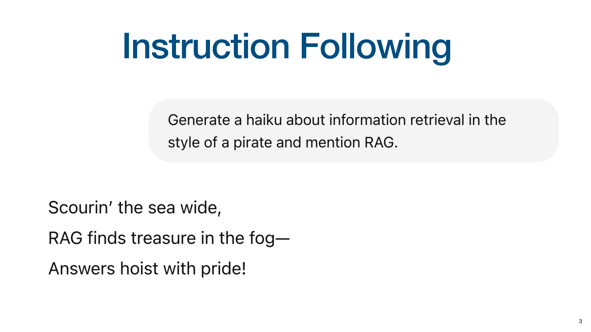
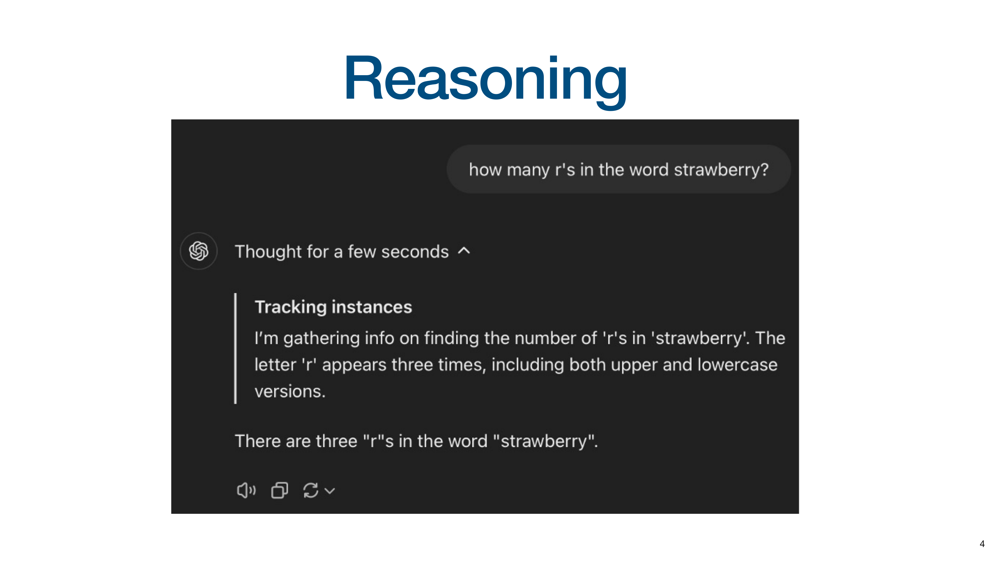
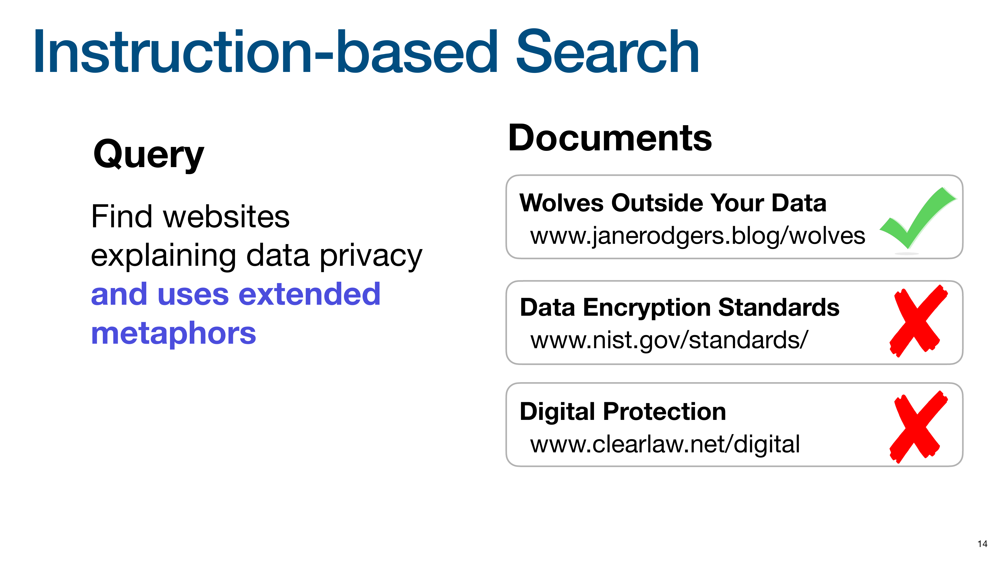
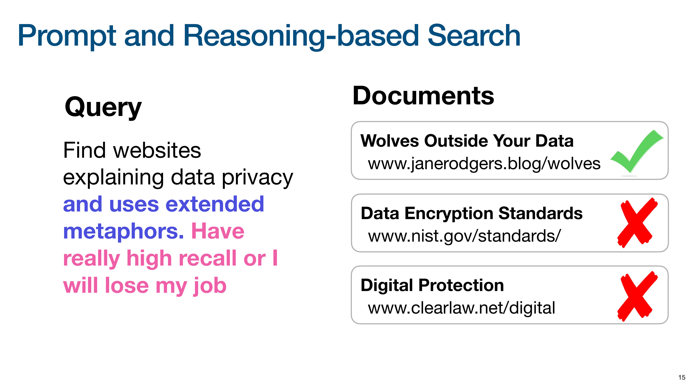
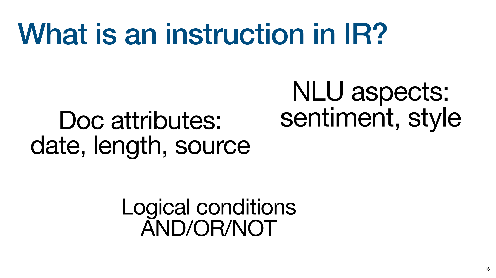
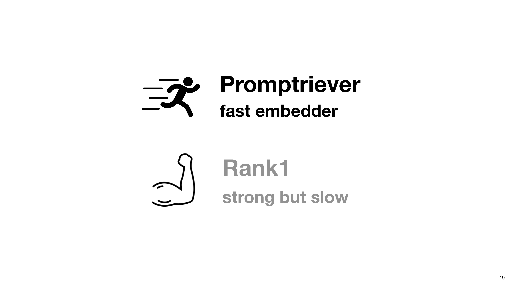
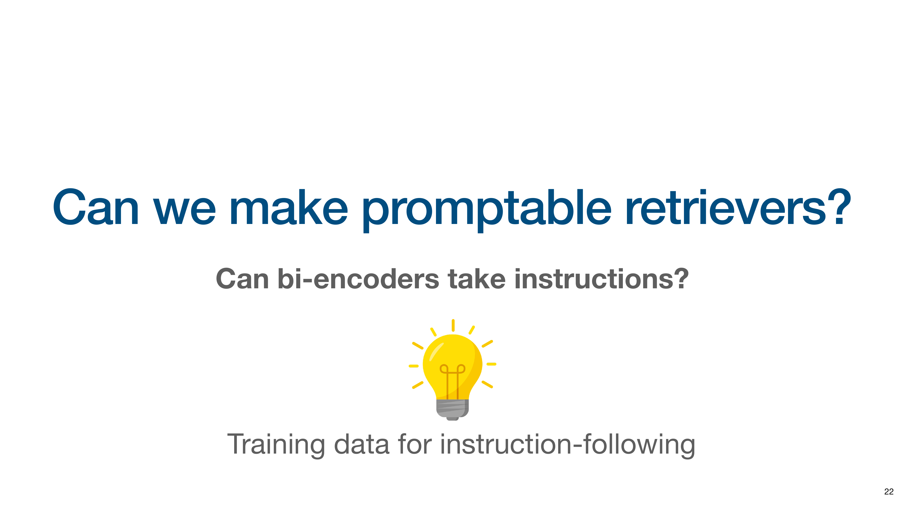
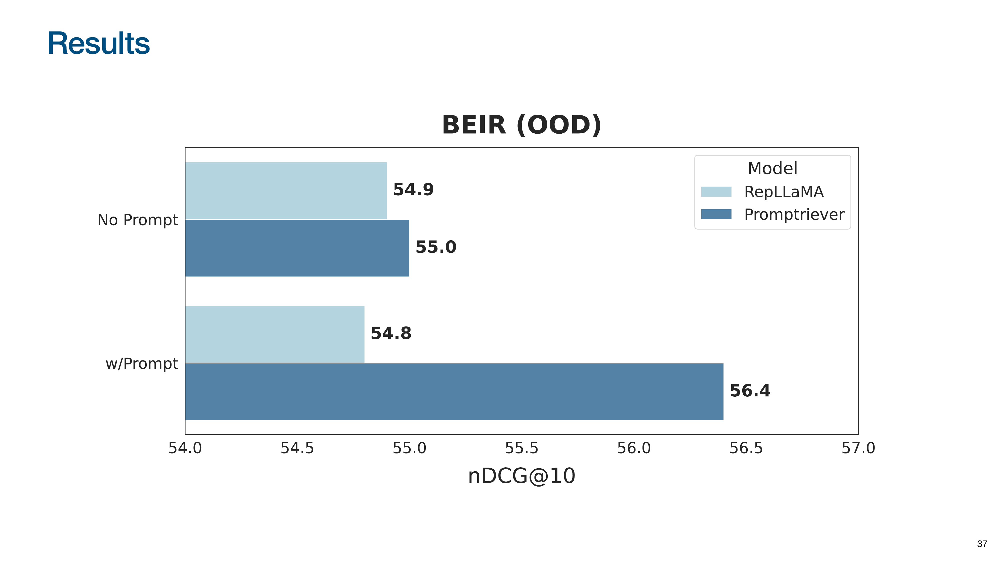
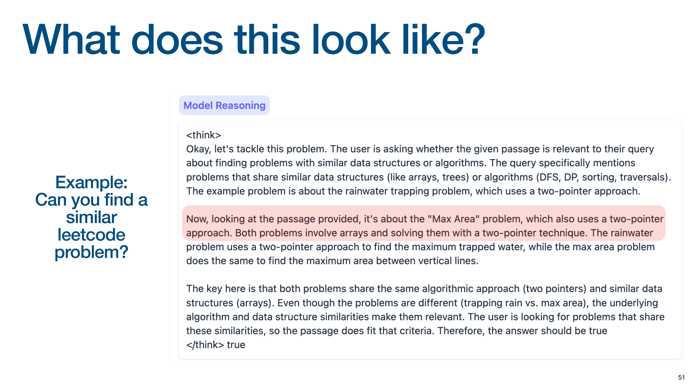

Optimizing Retrieval with Reasoning Models
Based on a presentation by Orion Weller
Orion Weller from Johns Hopkins University focuses on embedding the instruction-following and reasoning capabilities of modern Large Language Models (LLMs) directly into the retrieval process.
In his talk, Orion argues that while LLMs have improved RAG, the core retrieval step has remained static. He introduces a paradigm where instruction-following and reasoning are baked directly into retrieval models, a fundamental shift from using LLMs for query rewriting or as generic rerankers.
LLM Capabilities: Instruction Following and Reasoning
The talk begins by highlighting the user-facing interfaces of modern LLMs like ChatGPT, which have set new expectations for how we interact with AI. One key capability of LLMs is instruction following: executing complex, multi-part natural language instructions with high fidelity.

Orion shows the result of a pirate-themed haiku prompt. The model successfully adheres to all constraints: it generates a haiku, maintains a pirate style, and mentions “RAG,” demonstrating a level of instruction following that is a recent and significant advancement.

A second key capability is reasoning, also known as test-time compute or “thinking.” The slide shows a model verbalizing its thought process to solve a problem, generating intermediate “thinking tokens” that outline its step-by-step logic before providing the final answer.
The Search Paradigm Hasn’t Changed

To illustrate how little the search paradigm has changed, Orion shows Google’s interface from 1999.

He contrasts it with a modern Google search bar. Despite 26 years of development, the fundamental interaction remains the same: a user types keywords, and the system matches them to return a list of links.

Despite the interface, Orion argues the underlying retrieval process has not evolved. Even in advanced systems, the LLM is often just a “wrapper.” The system sends the query to a traditional search engine, gets back a standard list of results, and then uses the LLM to summarize them. The retrieval step itself hasn’t gained the new capabilities of the LLM.
Evolution of Search Paradigms

To illustrate current limitations, Orion starts with Keyword Search, which relies on exact lexical matching. Given a query and three documents, keyword search matches “Data Encryption Standards” and “Wolves Outside Your Data” because they contain the keyword “data.”
It fails to retrieve “Digital Protection” because it lacks the keyword “data,” even though “digital” is semantically similar.

The next evolution is Semantic Search, which matches based on meaning, often by representing queries and documents as vectors in a shared semantic space. A good semantic search model would retrieve all three documents, as it understands the relationship between “data” and “digital,” and “privacy” and “protection.”

Orion introduces Instruction-based Search, where the query is a nuanced command. The user wants to find documents about data privacy that also use “extended metaphors.”
An instruction-based search system should understand this meta-level constraint and retrieve only the “Wolves Outside Your Data” document, which uses a metaphorical title. It correctly identifies that the other two documents, while topically relevant, do not meet the stylistic instruction.

Orion pushes the concept to its extreme with Prompt and Reasoning-based Search. The query now includes instructions about the desired behavior of the search engine, such as “Have really high recall or I will lose my job.”
A traditional search engine would misinterpret this, likely searching for documents containing the word “recall.” An advanced, reasoning-based retriever should understand the user’s intent and adjust its retrieval strategy.
Understanding Instructions in IR

What is an instruction in the context of IR? Orion breaks it down into several categories:
- Document attributes like date, length, or source
- NLU aspects, such as document sentiment or writing style
- Logical conditions, combining multiple constraints with operators like AND, OR, and NOT
The space of possible instructions mirrors the complexity of natural language.
Introducing Promptriever and Rank1

Orion introduces two models from his research that embody these principles:
- Promptriever: A fast embedding model for following instructions during initial retrieval
- Rank1: A powerful but slower reranker that uses reasoning and test-time compute for nuanced relevance judgments
Promptriever: Instruction-Trained Retrieval

Orion explains the two main retrieval architectures. A Bi-Encoder (dense retriever) creates separate query and document embeddings for fast comparison, making it highly scalable. A Cross-Encoder (reranker) processes the query and document together for deeper interaction at a higher computational cost. Promptriever is a bi-encoder.

The main research question was how to enable fast, scalable bi-encoders to understand complex instructions. The missing ingredient was training data. Existing retrieval datasets like MSMARCO lack instructions because users don’t type them into traditional search engines.

This slide illustrates the process of generating the training data, starting with a standard query. The process uses an existing query-document pair from a standard dataset and uses an LLM to generate a detailed instruction that makes the relevance criteria more specific. A crucial part was also generating instruction negatives - documents that are relevant to the query but irrelevant to the instruction.
Promptriever Evaluation Results

On FollowIR, the baseline RepLLaMA (and all prior embedding models) scored negatively, performing worse when given an instruction. Promptriever is the first to achieve a positive score, demonstrating that bi-encoders can learn to follow instructions.

Without a prompt, Promptriever performs comparably to the RepLLaMA baseline, showing that instruction-following capabilities don’t hurt performance on traditional tasks.

When a generic instruction is added, Promptriever’s performance increases significantly, while the baseline’s degrades slightly. This demonstrates that Promptriever’s retrieval strategy can be controlled with natural language - a form of zero-shot hyperparameter optimization via prompting.
Rank1: Reasoning-Based Reranking

The focus now shifts to Rank1, the reasoning-based model. The associated paper’s title is “Rank1: Test-Time Compute for Information Retrieval,” highlighting its focus on reasoning in the reranking stage.

This slide shows what the reasoning process looks like in information retrieval. Given a query and a document, the model generates a detailed reasoning trace, identifying key phrases, analyzing the relationship between query and document, and questioning its own interpretations before arriving at a final judgment.

This slide shows Rank1’s reasoning on a LeetCode problem. Asked to find a similar problem, it correctly identifies the core “two-pointer approach” algorithm in the provided document and recognizes that the candidate document also uses the same technique, demonstrating a deep, algorithmic level of understanding.
Rank1 Performance Results

The evaluation covers tasks testing reasoning (BRIGHT), negation (NevIR), and instruction following (mFollowIR). The baseline model, RankLLaMA, was trained on 10 times more data than Rank1. Despite being trained on far less data, Rank1 nearly doubles the performance of the baseline on the BRIGHT reasoning benchmark.

To isolate the impact of the reasoning chain, they compared training the same model on the same data, with and without the “thinking” part of the training examples. The results show that training the model to generate the reasoning chain leads to a massive 10-point gain in performance. The act of “thinking” itself unlocks these advanced capabilities.
Finding Novel Relevant Documents

They were surprised by low scores on the DL19/DL20 datasets, discovering their model was finding many documents that had never been judged by human annotators because older systems had never retrieved them.

Reasoning-based models are not just improving scores on old benchmarks; they are finding new, relevant documents that previous systems missed. This also suggests the IR community should move on from older evaluation datasets as they may not be equipped to measure modern model capabilities.
Chapter Takeaways

Orion concludes that the overall goal is to create IR systems that work like LLMs, capable of handling queries that combine topic, style, and behavioral instructions.
Key insights from this work:
- Promptriever enables fast bi-encoder retrievers to follow complex instructions through specialized training data
- Rank1 uses reasoning chains to achieve superior performance on complex retrieval tasks
- Both models demonstrate that LLM capabilities can be successfully integrated into retrieval systems
- Reasoning-based models discover novel relevant documents that traditional systems miss
New retrievers can directly benefit from rapid LLM advancements. As LLMs get better at reasoning and instruction following, so will the retrieval systems built upon them.
Video
Here is the full video: